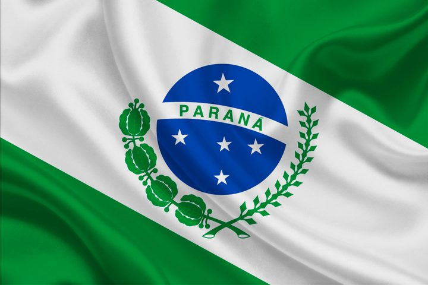

Matias M. Yapura
Sobre mim
Meu nome é Matías Marcelo Yapura. Sou argentino e moro em Curitiba, no Paraná. Trabalho com marketing e desenvolvimento de projetos digitais, e estudo o Bacharelado em Software pela BYU. Gosto de aprender tecnologia e criar soluções que ajudem pessoas e negócios.
Curitiba, Paraná

Curitiba é a capital do Paraná, no sul do Brasil. A cidade é conhecida pelo planejamento urbano, pelas áreas verdes e pelo sistema de transporte público.